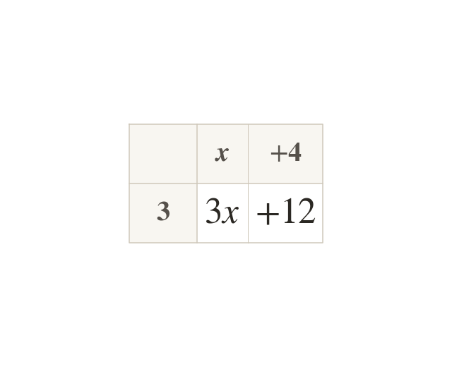

The distributive property
Expanding multiplies every term inside the bracket by the term outside. : the reaches the and the
Expanding a bracket multiplies every term inside by the term outside - not just the first one. : the reaches both the and the